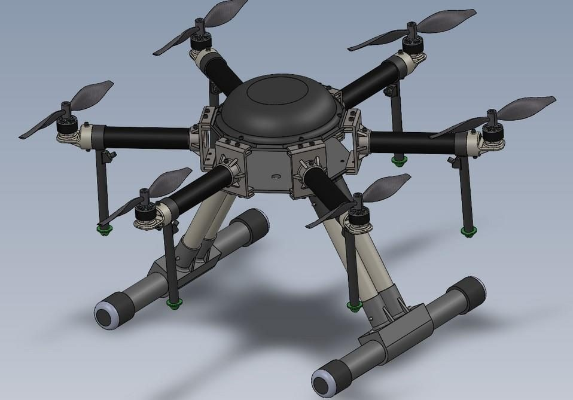
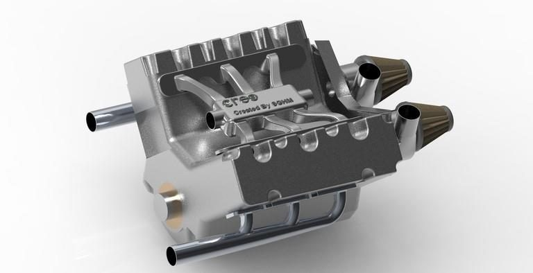
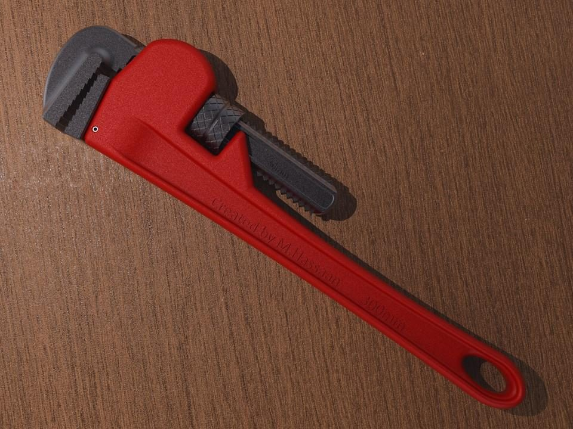
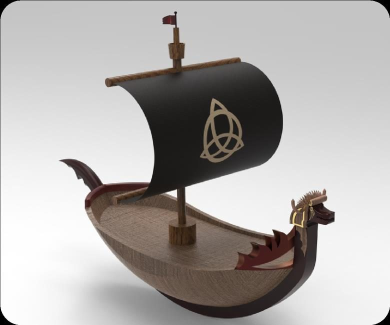
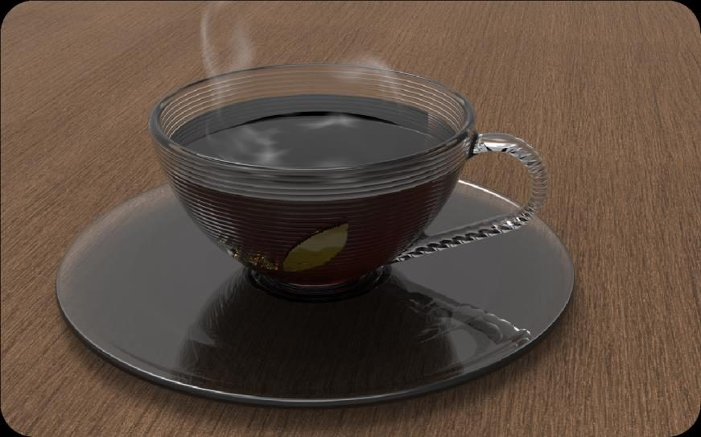
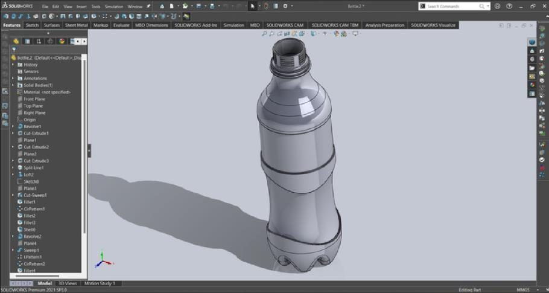

Mechanical engineer. I turn physical requirements into computational models from code, run them from the command line, and verify them against closed-form solutions.
Computational mechanics portfolio: scripted FEA with executable verification
Every study below starts from a requirement and ends with a number that is checked. Geometry, mesh, materials, loads and boundary conditions are written as Python; CalculiX runs as a subprocess; results are parsed into NumPy and compared with beam theory, Peterson's charts, fin theory, Euler buckling or an independent implementation. Each script finishes with a list of checks that pass or fail, and the quick ones re-run in GitHub Actions on every push.
The figures and numbers on this page are produced by those scripts. Nothing here was read off a contour plot.
Models from code
Structured and unstructured meshes from the Gmsh API, geometry from CadQuery, plain-text CalculiX decks, node-order permutations for 20-node hexes and 10-node tets, consistent nodal loads on quadratic faces.
Verification before interpretation
Timoshenko, Kirsch, Peterson, Incropera, Euler, Basquin. Each model has a reference solution, an equilibrium check, a convergence series and a stated tolerance; the script exits non-zero when any of them fails.
Finding what is wrong
Shear locking, hourglassing, point-load and constraint-edge singularities, mixed unit systems, the wrong strength criterion: reproduced on purpose, quantified, and written up as a review with severities.
100
CalculiX solver runs behind the committed results
41
objective checks, all passing, on the seven studies
7 / 8
checks that fail on the AI-generated solution in project 06
0
graphical-interface steps in any pipeline
Studies
Seven studies, each with a reference solution and a check list
01
Cantilever beam: verification and element convergence
For a problem with a known answer, how close does the scripted Gmsh → CalculiX pipeline get, and which element formulations can be trusted at which mesh density?
Model
400 × 20 × 20 mm steel bar, clamped, 500 N tip traction applied through consistent nodal loads; 22 runs over C3D8, C3D8R, C3D8I, C3D20, C3D20R, C3D4 and C3D10.
Reference
Timoshenko tip deflection 4.008 mm (Cowper κ = 0.850); bending stress M c / I = 135 MPa at two depths from the clamp.
Result
Converged C3D20R: 0.9964 × Timoshenko and 135.0 MPa; the 0.4 % residual is the Poisson restraint of a real clamp. Single-layer C3D8 locks at 65 % of the deflection; single-layer C3D8R hourglasses to 27.7 × with no solver warning.
Tip deflection relative to Timoshenko against degrees of freedom. Quadratic and incompatible-mode elements sit within 1 % from the coarsest mesh; full-integration and linear-tet elements approach from below, reduced-integration hexes from above.
02
Plate with a circular hole: stress-concentration sweep
Does a quarter-symmetry plane-stress model reproduce the textbook Kt across hole sizes, where does the peak sit, and how fine must the mesh be at the hole?
Model
100 mm wide plate, σ₀ = 100 MPa far-field tension, CPS8 quads refined by a distance field around the hole, d/W from 0.1 to 0.6 plus a four-level convergence series.
Reference
Peterson's finite-width fit for the net-section Kt; Kirsch's infinite-plate field along the net section.
Result
Kt within 1.4 to 2.0 % of the chart at every d/W, peak at θ = 0° in every case, Kt converged to 0.09 % between the two finest meshes; the finite-width departure from Kirsch is visible and explained.
σyy/σ₀ near the hole for d/W = 0.3 with the element outlines: the distance-threshold size field puts 32 quadratic elements on the quarter arc and coarsens away from it.
03
Modal and linear buckling analysis of a slender cantilever
Do the natural frequencies, mode shapes and critical loads of a 3D solid model match beam theory, and where do they legitimately differ from it?
Model
400 × 20 × 10 mm steel cantilever, C3D20R meshes from 2 319 to 80 043 DOF; a ten-mode frequency step and a four-mode buckling step, with every mode classified automatically as weak-axis, strong-axis, torsional or axial from its displacement field.
Reference
Euler-Bernoulli and exact Timoshenko cantilever frequencies, Saint-Venant torsion, the axial rod, Euler fixed-free column loads with the Engesser shear correction.
Result
First weak-axis mode 51.06 Hz against 50.96 Hz; all eight bending modes sit within +0.11 to +0.31 % of Timoshenko once shear and rotary inertia are included; first buckling load 5.15 kN against Euler's 5.14 kN. The study also isolates a CalculiX pitfall: buckling factors are only accurate when the reference load puts them near order one, and a unit load silently gives a 13 % error.
Buckling modes of the fixed-free column against 1 − cos((2n − 1)πx / 2L): weak axis, strong axis, then the second and third weak-axis modes, each within 1 % of Euler's load.
04
Pin-fin heat transfer: 3D conduction and convection against fin theory
Does a three-dimensional CalculiX heat-transfer model reproduce the closed-form convective-tip fin solution, and does the energy balance close from the nodal results?
Model
Aluminium pin fin, 6 mm diameter, base held at 100 °C, film coefficient 50 W/m²K to 25 °C on the lateral surface and tip; curved C3D10 tetrahedra from a Gmsh OCC cylinder; three mesh levels and a length sweep from 10 to 140 mm, ten solves in all.
Reference
Incropera's fin with convective tip: qf = 3.6173 W, tip temperature 81.313 °C, efficiency 0.832 at 60 mm.
Result
Centre-line temperature within 0.014 °C of theory everywhere, tip within 0.001 °C, heat rate within 0.22 % as printed and 0.015 % once the reaction is corrected. Tracing the balance node by node showed that CalculiX's printed base flux omits the film loss of the first element ring, an order-h effect that explains its first-order convergence. Adding 20 mm of fin buys less than 5 % beyond 108 mm.
Length sweep at the converged element size: heat rate and efficiency from CalculiX on the 1D fin-theory curves, with the point beyond which another 20 mm of fin adds less than 5 %.
05
L-bracket design optimisation from CAD script to verified optimum
What thickness and inner fillet radius give the lightest wall bracket that keeps a safety factor of 2 on yield and deflects less than 0.6 mm under 600 N, and can the optimum be trusted?
Model
Parametric CadQuery bracket exported to STEP, meshed with second-order tets refined on the fillet, solved in CalculiX in a consistent mm-N-MPa system; a 7 × 5 design of experiments, quadratic response surfaces in log stress and log deflection, SLSQP minimisation of mass, then a direct FE run at the optimum.
Reference
No closed form for an L-bracket, so the checks are equilibrium in every run, surface fit quality (R² 0.999), a direct FE verification of the surrogate optimum, and a four-level mesh series on the design stress.
Result
Optimum t = 7.19 mm, R = 10 mm: 0.509 kg against 0.697 kg for the thick-plate baseline, 27 % lighter, safety factor 2.56 and 0.590 mm verified by FE (surrogate said 2.51 and 0.600). Fillet stress converged to 0.8 %; the fixed-edge stress grew 21 % over the same series and is excluded as the singularity it is.
Design space from the response surfaces: mass in colour, the SF = 2 boundary in red and the 0.6 mm deflection boundary in orange; a large fillet lets the plate thin down until deflection, not stress, becomes the active constraint.
06
Reviewing an AI-generated FEA solution
Given a machine-generated finite-element answer to a simple task, can the review be made objective: which numbers are wrong, why, by how much, and which checks would have caught each error without knowing the answer?
Submission
794 linear tets, point load on one node, E entered in Pa with mm geometry, maximum stress read at the clamp face, safety factor 5.01 on ultimate strength, "reaction equals load, model is correct".
Review
The submission is re-run as written, refined four times, and compared with a corrected C3D20R model and with M c / I. Eight checks are applied automatically, each with its evidence.
Result
Deflection 2 × 10⁶ times too small (units × element stiffness); reported maximum rises 62 % under refinement because it sits on a singular edge; the real safety factor is 1.83 on yield. Seven of eight checks fail; equilibrium passes for every wrong mesh too.
Checks
7 of 8 fail on the AI solution · reference model agrees with theory to 0.0 % (stress) and 0.4 % (deflection)
The AI model under refinement: the stresses at the point-load node and on the clamped face keep rising, while the bending stress two depths from the clamp approaches the hand value of 135 MPa from below because the linear tetrahedra are too stiff.
07
Fatigue life under variable-amplitude loading
How much does the choice of mean-stress correction move a stress-life estimate for the same counted spectrum, and can the whole chain be proven against a closed-form case?
Model
Own ASTM E1049 rainflow counter, Shigley S-N line with the Marin factors evaluated for the project-01 bar (Se = 201 MPa), Goodman, Gerber, Soderberg and Smith-Watson-Topper corrections, Palmgren-Miner summation over a 60 s synthetic tip-load history.
Reference
The rainflow package (ASTM E1049) and the standard's own worked example; a constant-amplitude cosine whose life must equal N(S).
Result
1082.5 cycles per block, identical to the reference in every 10 MPa bin; every corrected amplitude sits below the endurance limit (margin 1.57 to 1.87), and on the extended Basquin line the four corrections span a factor of 5.05 in life.
Rainflow matrix of the 60 s block: 841 small noise cycles along the bottom, the 4 Hz load at 100 to 140 MPa range, and 17.5 large cycles where the two sinusoids add.
Method
The same pipeline under every study
1 Geometry
From code
CadQuery parametric solids exported to STEP, or Gmsh OCC primitives cut and fused in the script.
2 Mesh
Gmsh API
Transfinite hexes or HXT tets, second order, distance-threshold size fields where stress gradients live.
3 Deck
Plain text
Node-set and face lists from physical groups; material, sections, steps and loads written by helpers you can read.
4 Solve
ccx
CalculiX called as a subprocess; static, frequency, buckling and heat-transfer steps; any *ERROR aborts the run.
5 Parse
.frd / .dat
Nodal blocks and eigen tables into NumPy; von Mises and principal stresses computed in code.
6 Verify
Closed forms
Equilibrium, convergence series, comparison with theory at a stated tolerance; PASS/FAIL written to summary.json.
7 Repeat
CI
pytest plus the quick studies run on Ubuntu in GitHub Actions on every push, with the results uploaded.
fealib, the shared package
mesh.py converts any Gmsh model to CalculiX element types with the node-order permutations (C3D20, C3D10, C3D15, CPS8), turns physical groups into node and element sets, matches boundary elements to element faces for pressure and film loads, and computes consistent nodal loads for uniform tractions (corner nodes of a 20-node hex face carry −1/12 of the force, midside nodes +1/3).
Solver driver and references
ccx.py writes decks, runs the solver and parses results; analytic.py holds the closed forms: Timoshenko and Euler beams, cantilever modes, Euler buckling, Peterson and Kirsch, Incropera fins, Lamé cylinders. Unit tests cover the parsers, the conversion and the formulas, and one end-to-end solve compared with Timoshenko.
Earlier work
CAD design and rendering
Before this repository my design work lived in SolidWorks and PTC Creo. A selection, from team projects with real deliverables to personal modelling exercises.

Ventus-I hexacopter · SolidWorks. Design lead in a seven-person team for the IMechE UAS Challenge: agricultural UAV with precision navigation and a spraying payload.

V6 twin-turbo engine · PTC Creo. Course project in a team of four; block, heads, crank train, manifolds and turbochargers modelled as a full assembly.

Pipe wrench · SolidWorks. Adjustable-jaw assembly built from image tracing with working mates, then rendered.

Viking longship · SolidWorks. Personal modelling and rendering project with a full sail and figurehead.

Tea cup and saucer · SolidWorks. Concept surface model with a rendered glass material study.

PET bottle · SolidWorks. Revolved and swept surface model with the ribbed base and threaded neck.
Background
Where the judgement comes from
Degree
B.Sc. Mechanical Engineering, National University of Sciences and Technology (NUST), Islamabad, 2024. Thesis: environmental ageing of hybrid composites, ASTM D7264 / D2344 testing of 72 laminates.
Further
MIT Emerging Talent certificate in computer and data science, 2025. Stanford Machine Learning specialisation; Imperial College Mathematics for Machine Learning.
Standards
ASTM, ASME, ISO, EN and API in test, design and evaluation work; GD&T, FMEA, tolerance analysis.
Industry
Mechanical engineer, Atlas Honda, 2024 to date. Process optimisation, root-cause analysis and CAPA, DFM/DFA reviews and engineering change orders.
Earlier
Project engineer, INTECH Process Automation, 2022 to 2024. Skid-mounted packages and wellhead control systems: FMEA, tolerance analysis, drawing review to ASME and API.
AI data
Engineering evaluation tasks and reviews for micro1, Mercor and Turing since 2024. Tasks grounded in standards, reasoning reviews of fatigue, stiffness and manufacturability trade-offs, team lead for engineering evaluation at Mercor.